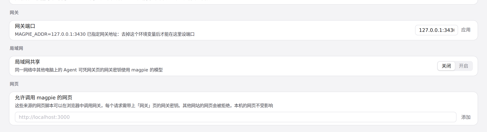
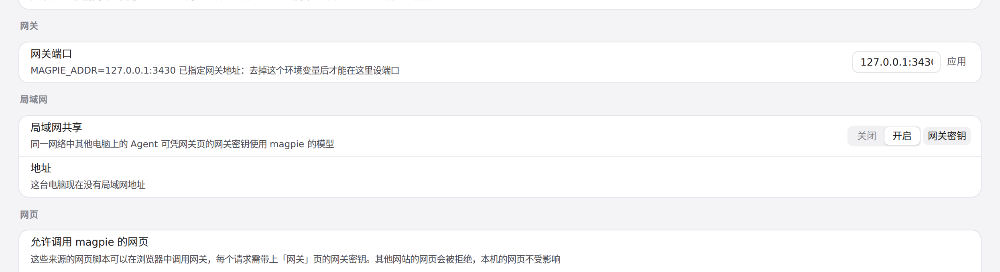
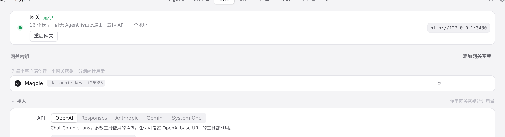

#1193 界面预览
commit 1d5daf7 · 回到 PR · 局域网共享这一行改了：开关不再轮换或重启用密钥（密钥库为空时才自动创建第一个默认密钥），共享开启时行内多出「网关密钥」按钮跳到网关页；密钥都不可用时在开关旁显示提示文案（role=alert）并本地化。网关页密钥列表为空时的占位改用应用统一的 empty-state 样式。
红线是鼠标走过的轨迹，红色圆环是一次点击；底部文字是这一步在做什么。空格暂停，← → 逐段查看。

局域网共享行新增「网关密钥」入口 · 共享关闭时的这一行

局域网共享行新增「网关密钥」入口 · 开启共享后这一行的样子
 局域网共享行新增「网关密钥」入口 · 跳转后网关页的网关密钥列表
局域网共享行新增「网关密钥」入口 · 跳转后网关页的网关密钥列表

来回开关共享后的网关密钥列表 · 反复开关共享后的网关密钥列表